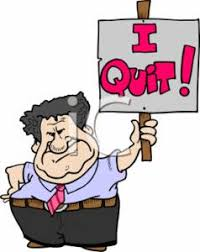

Since you decide to go back to sleep and not tell your coach you were not going he decides to bench you the rest of the season. You can either quit the team or just sit on the bench for the remainder of the season.
